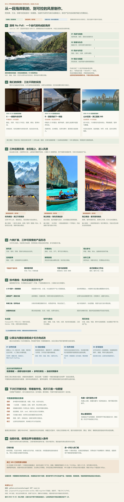

源库算法与扩展指导
从实现解析，走向下一次扩展。
这张图将 Claude Code 驱动开发后形成的地形、生态、水体、光照、镜头与输出能力整理为可复用技术地图，可为我们的场景和交互扩展提供指导。先复现原作基线，选择并保留成熟模块，再在有限的结构、参数与镜头改动中验收画面和性能。
它帮助我们判断哪些实现可以继承、哪些部分需要适配。泻湖可重点研究海浪与近岸水色，山水可重点研究地形、生态与镜头配合；新题材仍需独立验证。


源库效果与原理 → 三处探索 → 三种扩展 → 技术路线 → 下次控制经验 → 价值边界

源库算法与扩展指导
这张图将 Claude Code 驱动开发后形成的地形、生态、水体、光照、镜头与输出能力整理为可复用技术地图，可为我们的场景和交互扩展提供指导。先复现原作基线，选择并保留成熟模块，再在有限的结构、参数与镜头改动中验收画面和性能。
它帮助我们判断哪些实现可以继承、哪些部分需要适配。泻湖可重点研究海浪与近岸水色，山水可重点研究地形、生态与镜头配合；新题材仍需独立验证。
2026.10.26 整理 · 本页仅展示总览图，不启动三维场景。原图可离线保存；当前状态与逐项证据以项目正文为准。